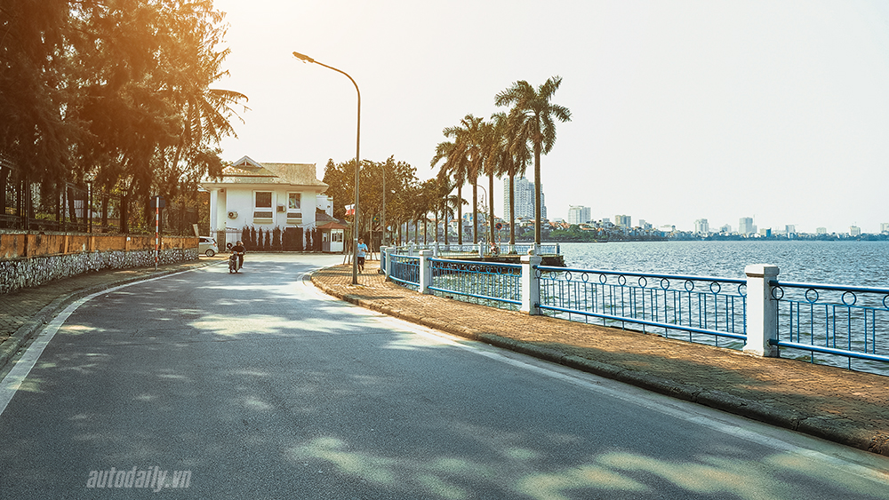

HÀ NỘI - THE CAPITAL OF VIETNAM
Ha Noi is the capital of Vietnam and the country's second largest city. Its population in 2009 was estimated at 2.6 million for urban districts and 7 million for the metropolitan jurisdiction. The population in 2015 was estimated at 7.7 million people. From 1010 until 1802, it was the most important political centre of Vietnam. It was eclipsed by Huế, the imperial capital of Vietnam during the Nguyen Dynasty (1802–1945), but Hanoi served as the capital of French Indochina from 1902 to 1954. From 1954 to 1976, it was the capital of North Vietnam, and it became the capital of a reunified Vietnam in 1976, after the North's victory in the Vietnam War.

The city lies on the right bank of the Red River. Hanoi is 1,760 km (1,090 mi) north of Ho Chi Minh City and 120 km (75 mi) west of Hai Phong city.
October 2010 officially marked 1000 years since the establishment of the city. The Hanoi Ceramic Mosaic Mural is a 4 km ceramic mosaic mural created to mark the occasion.
ĐÀ NẴNG - THE CITY OF BRIDGES
Da Nang is the third largest city in Vietnam in terms of urban population and one of the major port cities, in addition to Ho Chi Minh City and Hai Phong. Situated on the coast of the Eastern Sea, at the opening end of the Han River, it is the biggest city in Central Vietnam. It is governed as one of the five direct-controlled municipalities of the SRV and is thus under direct administration of the central government.

Danang is the commercial and educational center of Central Vietnam, with a well-sheltered, easily accessible port; its location on the path of National Route 1A and the North–South Railway makes it a hub for transportation. It is located within 100 km of several UNESCO World Heritage Sites, including the Imperial City of Hue, the Old Town of Hoi An, and the My Son ruins. The city was previously known as Cuahan during early Đại Việt settlement, and as Tourane (or Turon) during French colonial rule. Before 1997, the city was part of Quang Nam - Da Nang Province.
On 1 January 1997, Da Nang was separated from Quang Nam Province to become one of four independent (centrally controlled) municipalities in Vietnam. Da Nang is listed as a first class city, and has a higher urbanization ratio than any of Vietnam's other provinces or centrally governed cities.
TP. HỒ CHÍ MINH - THE PEARL OF THE FAR EAST
Ho Chi Minh City, formerly named and still also referred to as Saigon, is the largest city in Vietnam. It was once known as Prey Nokor, an important Khmer seaport prior to annexation by the Vietnamese in the 17th century. Under the name Saigon, it was the capital of the French colony of Cochinchina and later of the independent republic of South Vietnam 1955–75. On 2 July 1976, Saigon merged with the surrounding Gia Định Province and was officially renamed Ho Chi Minh City after revolutionary leader Hồ Chí Minh (although the name Sài Gòn is still unofficially widely used).

The metropolitan area, which consists of the Ho Chi Minh City metropolitan area, Thu Dau Mot, Bien Hoa, Vung Tau, Di An, Thuan An and surrounding towns, is populated by more than 10 million people, making it the most populous metropolitan area in Vietnam. The city's population is expected to grow to 13.9 million by 2025.
The Ho Chi Minh City Metropolitan Area, a metropolitan area covering most parts of the south-east region plus Tien Giang Province and Long An Province under planning, will have an area of 30,000 square kilometres (12,000 sq mi) with a population of 20 million inhabitants by 2020.